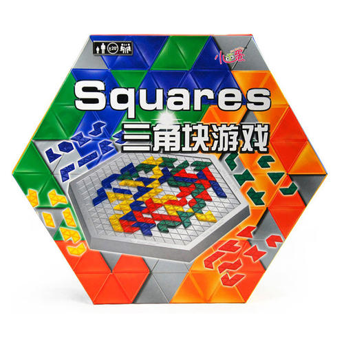
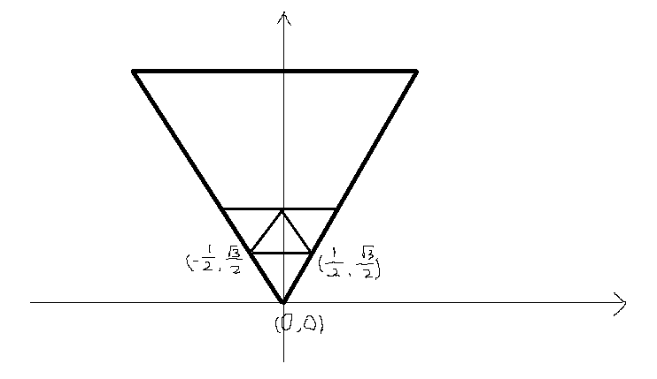
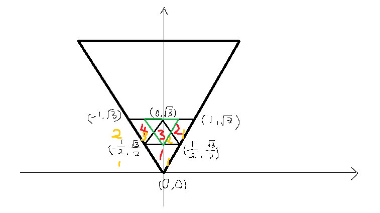
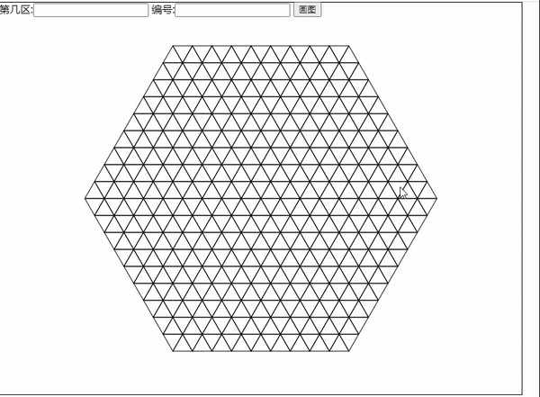

正六边形棋盘的思路

这是一个正六边形的棋盘，里面的格子都是由正三角形组成的 棋子也是由正三角形组成的，棋子要落在棋盘上，就要知道棋子的位置 研究的问题是，怎么去描述棋子的位置 经过数学大神点播后，有了一点想法，分享一个思路化简化简
- 格子编号 因为棋子和棋盘都是由格子组成的，想了半天，我觉得给格子编号会比较方便
- 棋盘分区 正六边形其实可以看做是 6 块三角形组成的，在平面直角坐标系中按照原点旋转是有公式的 x1=cos(angle)x-sin(angle)y; y1=cos(angle)y+sin(angle)x; 那么这个正六边形，就可以看作由 1 个三角形旋转不同角度获得的 给棋盘分为 6 个区，那么研究的问题就变成了一个正三角形
- 建立坐标系
选了一个自己算着舒服的三角形建立坐标系

- 分层编号，寻找规律

- 每一层的 Y 轴坐标相差 √3/2
- 每个编号的 X 轴坐标相差 1/2
- 唯一不同的是编号 3 是朝上的三角形，而编号 1，2，4 是朝下的三角形，但是通过分层可以发现，每层奇数号的三角形是朝下的，偶数号的三角形是朝上的
- 而且朝上的三角形与朝下的三角形,他们的 Y 轴坐标也是加减 √3/2，X 轴不变（见绿色三角形）
代码实现
let baseAreas = 6;
let baseIds = 81;
const G3 = Math.sqrt(3);
// 把所有三角都看作是1,1的三角变换而来,那么保存一个1,1三角的坐标
const defaultTri = [
[0, 0],
[1 / 2, G3 / 2],
[-1 / 2, G3 / 2],
];
// 根据area和id获取三角形3个顶点坐标
function getVertex(id) {
const [tier, index] = getTier(id);
// 根据11变换
let coord = transform(tier, index);
// index如果是偶数,y轴坐标需要变换
if (index % 2 === 0) {
coord = indexTransformY(coord);
}
return coord;
}
// 根据id获取在area中的层数与该层第几个
function getTier(id) {
const tier = Math.ceil(Math.sqrt(id));
// 减去上一层的总数
const index = id - Math.pow(tier - 1, 2);
return [tier, index];
}
function transform(tier, index) {
// X=(tier-index)*1/2
// y=(tier-1)*G3/2
return defaultTri.map(([x, y]) => [x + ((tier - index) * 1) / 2, y + ((tier - 1) * G3) / 2]);
}
function indexTransformY([[x1, y1], [x2, y2], [x3, y3]]) {
return [
[x1, y1 + G3 / 2],
[x2, y2 - G3 / 2],
[x3, y3 - G3 / 2],
];
}
/*
变换的每个area旋转60°
x1=cos(angle)*x-sin(angle)*y;
y1=cos(angle)*y+sin(angle)*x;
*/
function rotate(area, coord) {
const arg = ((area - 1) * 60 * 2 * Math.PI) / 360;
return coord.map(([x, y]) => [Math.cos(arg) * x - Math.sin(arg) * y, Math.cos(arg) * y + Math.sin(arg) * x]);
}
- 主方法是getVertex和rotate，getVertex 负责根据编号获取三角形的 3 个顶点坐标，rotate 负责根据分区旋转这个坐标
- getTier根据编号获取层数
- transform 根据编号规律(层以及层内编号)获得三角形顶点坐标
- indexTransformY根据本层编号奇偶去做 Y 轴变换 通过拆分成几个小问题就比较清晰拉~去实现每一个小问题的 function 就可以了
验证

附上一个比较直观的画图方法
// 画图验证
window.onload = function () {
btn.addEventListener('click', () => {
// 获取area
let area = document.getElementById('area').value;
let id = document.getElementById('id').value;
tri = [area, id];
draw();
});
canvas.addEventListener('mousewheel', ({ deltaY }) => {
if (deltaY < 0) {
zoom = zoom + 2;
} else {
zoom = zoom - 2 < 0 ? 2 : zoom - 2;
}
draw();
});
canvas.addEventListener('mousedown', mouseDown);
draw();
};
function mouseDown() {
window.addEventListener('mousemove', mouseMove);
window.addEventListener('mouseup', mouseUp);
}
function mouseUp() {
window.removeEventListener('mousemove', mouseMove);
window.removeEventListener('mouseup', mouseUp);
}
function mouseMove({ movementX, movementY }) {
origin[0] = origin[0] + movementX;
origin[1] = origin[1] + movementY;
draw();
}
board = []; // 棋盘
tri = []; // 三角
for (let i = 1; i <= baseAreas; i++) {
for (let j = 1; j <= baseIds; j++) {
board.push(rotate(i, getVertex(j)));
}
}
let zoom = 30;
const origin = [0, 0];
function draw() {
drawBoard();
drawTarget();
}
function drawBoard() {
// 画棋盘
const { clientWidth: width, clientHeight: height } = canvas;
let oX = width / 2;
let oY = height / 2;
const ctx = canvas.getContext('2d');
ctx.fillStyle = '#fff';
ctx.fillRect(0, 0, width, height);
ctx.lineWidth = 1;
ctx.strokeStyle = '#000';
const [dx, dy] = origin;
board.forEach(([[x1, y1], [x2, y2], [x3, y3]]) => {
ctx.beginPath();
// canvas y轴取反
y1 = -y1;
y2 = -y2;
y3 = -y3;
ctx.moveTo(x1 * zoom + oX + dx, y1 * zoom + oY + dy);
ctx.lineTo(x2 * zoom + oX + dx, y2 * zoom + oY + dy);
ctx.lineTo(x3 * zoom + oX + dx, y3 * zoom + oY + dy);
ctx.closePath();
ctx.stroke();
});
}
function drawTarget() {
const { clientWidth: width, clientHeight: height } = canvas;
let oX = width / 2;
let oY = height / 2;
const ctx = canvas.getContext('2d');
const [dx, dy] = origin;
const [area, id] = tri;
if (area && id) {
let [[x1, y1], [x2, y2], [x3, y3]] = rotate(area, getVertex(id));
ctx.lineWidth = 2;
ctx.strokeStyle = 'red';
ctx.beginPath();
// canvas y轴取反
y1 = -y1;
y2 = -y2;
y3 = -y3;
ctx.moveTo(x1 * zoom + oX + dx, y1 * zoom + oY + dy);
ctx.lineTo(x2 * zoom + oX + dx, y2 * zoom + oY + dy);
ctx.lineTo(x3 * zoom + oX + dx, y3 * zoom + oY + dy);
ctx.closePath();
ctx.stroke();
}
}